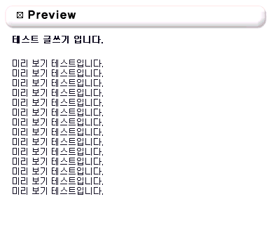

5. 4.1부터 추가된 미리 보기 기능입니다.
5. 이전의 스킨들에는 이 기능이 없습니다.
5. 추가를 하시고자 할때는
5. <?=$a_preview?>미리보기</a>
5. 문구를 스킨의 write.php 파일에 입력하시면 됩니다.
5. 제로보드 4.1의 기본스킨에는 이미 적용되어 있습니다.
5. 아래 그림은 미리보기 화면입니다.
5. 글을 입력하기 전에 꼭 미리보기를 하셔서 점검을 해보시는 것이 좋습니다.
